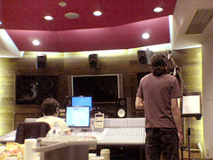
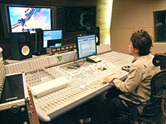

一曲を制作するのに、どれくらいの時間をかけるものなのでしょうか？ 曲作りの手順など教えていただけますか？
これは本当にケースバイケースですね。2日でミックスまで完パケした曲もあれば、数週間掛かかったものもあります。時間が掛かれば掛かる程、こね回してしまって曲の良さを無くしてしまう事が多いので、思いついた事は必ず簡単な譜面を起こしたり、直接シーケンサーに打ち込んで、最初に受けたインスピレーションみたいなものを大事にする様に心がけています。ゲームの進行具合で用意可能な素材を頂く事もイメージを膨らますのにはとても大事ですね。
自分の制作手順だと、リズムとベース、メロディー、上ものコードといった順でデモを作り切ります。歌ものであれば「ラーラーラー」で歌ってしまいますし、上ものコードもシンセなりギターなり何か一つの肝となるものを入れてみます。このデモが出来た時点でプロデューサーやディレクターに方向性の確認をして貰いつつ、修正も念頭に置いた編曲を行います。
ここで大体の使用楽器が決まり、レコーディングで差し替えるパートを決めたりしてラフミックスが完成します。あとはレコーディングやミックスダウンを経て、全ての完パケ曲をまとめてマスタリングして完了です。ほんとに最後の最後まで気が休まる事はありません。
「LET THE SPEED MEND IT」（スピードが全てを癒す）こちらも訳を見てグッときました。
まさにソニックに相応しい曲ですね！

セガスタジオでのRunblebee収録風景そう言って頂けると嬉しいですね。
この曲は一面のサンドオアシス用に出来た曲で、E3というアメリカのゲームショウで初お披露目となりました。今回は全ての歌詞をRunblebee氏にお願いしています。
ここ、セガスタジオに来てもらって、実際のゲームプレイ映像を見てもらい、かなり深いところまでディスカッションした上で制作して頂きました。
彼のすごい所はとても前向きな所で、アイデアもポンポン出してくれるほど協力的で温かいハートの持ち主ですので、信頼は絶大です。
特にボーカル曲で構成するステージ曲では、物語を構成する本の役目も歌詞に持たせたいと思っていましたので、出来上がった歌詞を見てとても感激したのを覚えています。彼の詩は深い所を突いていてすごくうまいと思いますね。
ちなみにRunblebee氏は日本語も英語もネイティブなハーフですので、言語の細かなニュアンスを全て拾ってくれたりと彼とのコミュニケーション無くしては実現不可能な作業でした。
ご自分ではどの曲が一番好きとかありますか？
また、その理由などもありましたらお話しいただけますか？
全てが感慨深いものがありますが、ステージ曲で上げるとすれば2つあります。「The Palace That Was Found」と「How It Started」ですね。
前者は、who is going to rock the place? 「誰がこの場所を変えていくんだ？」という歌詞が続きますが、由緒ある古城がイレイザージンによって占領され、機械と化してしまったこの現状を、本当はその者達が皆、打破したいという強い願いが込められていたりします。冒頭にもある、「もし本当に自由なら、止める事は出来ない。何が起きようとも」という所が一番好きです。何もできずにいても意思だけは強いままでいようという所に切なさを感じます。
それから「How It Started」という曲では、だれにでもある心の弱さに流され続けると操られた巨大な炎の魔神イフリートの様な化け物になってしまうよ、と戒めを持って叫び続ける曲でもあります。すべてはポジティブに行きたいですからね。
プロジェクトを進める上で、何が一番大変でしたか？

SE(効果音)とBGMの兼ね合いが難しかったです。
着手した当初は、映画の様なダイナミックレンジ（抑揚の幅が広い設計）を行うつもりでしたが、ソニックが通過するオブジェクトも多く、派手にSEを鳴らしたいと思ってからは考えを一新しましたね。
BGMもガツンと出した方が効果的でしたので、もはや映画的な演出はかえって効果的では無いと感じたんです。結果、スタジオにこもって各面ごとに、納得がいくまで、ひたすら調整をしていましたね。ずーっと。ワイルドさが出るまで何度でも（笑）。
プロジェクト進行中、うれしかったことはどんなことですか？
これっていつも思う事なんですが、ゲームが段階を追って出来上がる過程で、感情に訴えかけるものに変化した時が、一番嬉しい事でもあり、やっていて良かったと思える瞬間ですね。
そういった意味では、特にイベントシーンでそれらを表現出来た事が非常に大きかったと思います。
これは、担当したスタッフ全員に感謝です！
物語を構成する上で、どんなシチュエーションでも心をサウンドで表現する事が大事だと思いますし、それが出来たら最高ですよね。
セガに入ったきっかけ、動機などを教えていただけますでしょうか？
最初は全く違う職業に就いていたんです。ライブハウスにずっとレギュラーで出てたりとか、某レコード会社からオファーがあったりもしましたが、なかなかバンドがうまく行かない事が多かった。それら全てを辞めてからも、サラリーマンやりながらその傍らで曲は作っていました。これで飯が食えたらいいのになって。
そんな時、好きな音楽雑誌を読んでたら、「ゲームクリエイター、サウンドクリエイター募集」というのが1ページだけあって。ゲームサウンドの仕事は全く考えも付かなかったので、やられた感が大きかったです。
ゲームも好きですが、何より音楽を仕事にしたかったという事もあり、これはすぐ出さなきゃ！ということで1週間で5曲ドーっと作って。留学生の友人にも歌ってもらったりしましたね。その後面接を経て入社となりましたが、今でもあの1週間の勢いは自分にとって忘れられない思い出です。